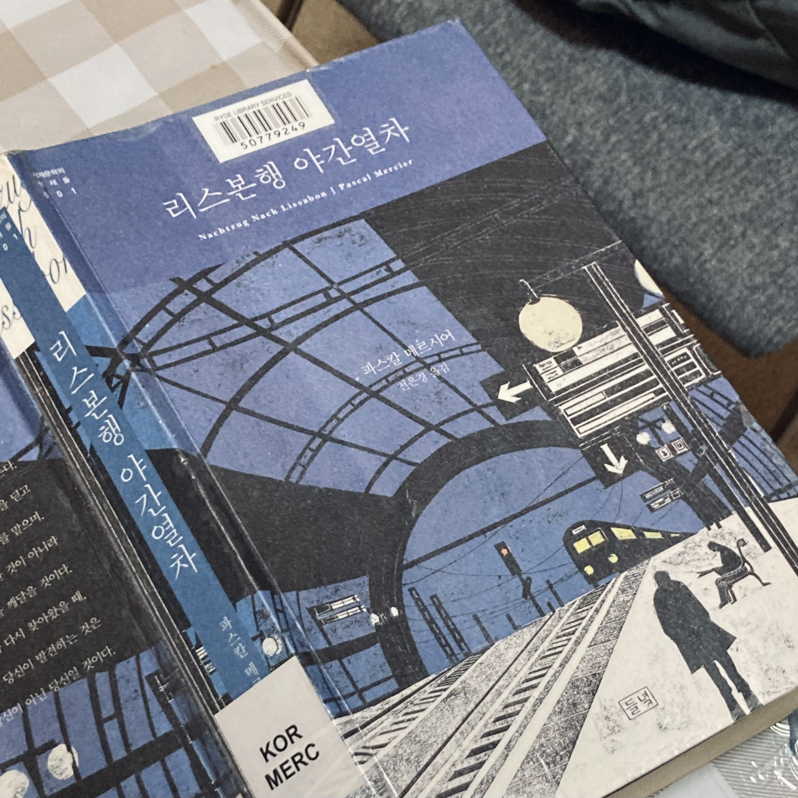

[독후감] 리스본행 야간열차
공장 일을 모두 끝내고 긴 이야기를 읽고 싶어 고른 책. 지금보다 어릴 때 읽었다면 분명 떠나는 그레고리우스에게 이입했을 것 같다. 우연한 사건으로 일상에 작은 균열이 생기고, 그 틈에서 발생한 “영혼의 떨림”을 따라 훌쩍 떠나는 그에 감명받으며. 그런데 왜인지 베른으로 돌아가는 그의 모습을 자꾸 곱씹는다. 지금 내가 귀국을 앞두고 있기 때문일까.
일 년 전의 나와 지금의 나는 무엇이 얼마나 달라졌을까. 사실 7월 마지막 날 마지막 근무를 끝내고 곧장 자전거 여행을 떠날 계획이었다. 브리즈번까지 몇날 며칠을 달리며 한 해 동안의 워홀 생활을 돌아보려 했는데... 했는데! 지독한 감기 + 궂은 날씨로 출발하지 못했다. 일할 땐 그렇게 맑고 화창하더니 지난 열흘간 비가 내리지 않은 날은 이틀뿐. 브리즈번까지는 1200km, 이번 수요일 전에는 출발해야 귀국일을 맞출 텐데, 다음주도 내내 비 소식이고 여전히 기침으로 잠을 설친다. 아쉽지만 다른 방식으로 매듭지어야겠지.
다시 책 이야기로 돌아와, 그레고리우스는 왜 베른으로 돌아갔을까. 스스로에게 귀로를 허한 계기는 무엇일까. 세상의 끝 피니스테레에서 만난 어부들에게 삶이 만족스러운지 묻는 장면에서 답을 찾아 본다. “만족하냐고? 다른 삶은 모르는 걸!” 결국 어떤 삶을 택한들 다른 삶은 모르는 영역으로 남는다. 그렇다면 떠나는 것도 돌아가는 것도 그리 큰 의미를 갖진 않을 터. 어부들과 함께 눈물까지 빼며 흥겹게 웃던 그 순간, 어렴풋하게나마 돌아가도 괜찮다는 생각이 들지 않았을까.
워킹홀리데이를 떠나올 때 뭐하러 가느냐는 물음을 많이 받았다. 농담을 반쯤 섞어 ‘낭비할 돈은 없고 시간은 좀 있는 것 같아서 시간 낭비하러 간다’고 답하곤 했는데, 책에서 위안을 얻는다. “네가 언젠가 죽으리라는 걸 기억해. 어쩌면 내일일지도 몰라.” / “내내 그 생각을 해서 직장을 빼먹고 햇볕을 쬐고 있는 거야.” 언젠가 죽을 것을 알기에 시간도 낭비해 보고 하는 거지,라고 제멋대로 해석하며.
모쪼록 이곳에서의 여정을 잘 마무리하고 돌아가고 싶다.

파스칼 메르시어, 리스본행 야간열차, 전은경 옮김, 들녘(2014.03.25. 출간)